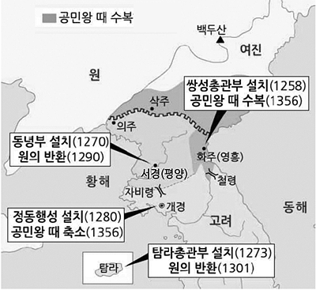

22년 국가직9급 필기[4.2(토)]
(접수: 2.10(목)~2.12)
[공지.정오.오류]
[조선.태종]
●(경1.21)서얼차대법이 제정되어 서얼의 문과 응시가 제한되었다
(개발자가 왕초보에게)(경국대전의 서얼차대법(서얼금고))
: 우리나라 법을 보면 세법 아래 세법 시행령(대통령령)이 있어요.
: 시행령 규정으로 법을 적용하다가 상향 입법하는 경우도 제법 있어요.
: 그것처럼 [서얼차대법]을 대통령령으로 시행하다가 이후 상위 법률로(경국대전) 상향입법되었다고 생각하면 이해하기 쉬워요.
-------
남면북양정책(1930년대초, 1932~)
:병참기지화정책의 기초가 됨
(종전에 1930년대로만 표시되어 수정함)
----

(지9_21년.10번)(동녕부 관련 이미지 안나오는 버그 있음)
android_history_ver:2.29
정오표에 있는 사항을 반영
일부 키워드를 추가.수정함
: 홍자번'편민 18사', 단양 도담리 금굴 등
-----
[주제별풀기]
: 문제 쬐금 추가